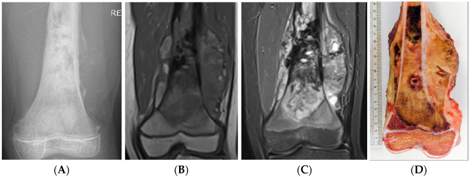

332 — Sarcoma nguyên phát: osteosarcoma, Ewing, chondrosarcoma / Sarcomas
Tags: pattern:sarcoma-nguyen-phat vung:xuong
Mức chắc chắn (certainty): tổng hợp y văn (literature synthesis) — nhóm tự biên từ y văn mở, chưa gắn ca nguyên văn đơn lẻ.
1. Tổng quan — tuổi + matrix + màng xương ác tính là tam giác chẩn đoán
- Osteosarcoma (10–25 tuổi, hành xương gối): tạo xương ác → đám mây đặc ngà (cloud-like) + nâng màng xương (Codman) + tia mặt trời (sunburst) — TẠI SAO: u đẻ xương non hỗn loạn, màng xương bị đội lên tạo tam giác + tia.
- Ewing (5–20 tuổi, thân xương): tế bào tròn nhỏ → thấm + vỏ hành (onion-skin) + khối mềm lớn hơn phù xương — TẠI SAO giống viêm: thấm + sốt + CRP tăng (sinh thiết mới phân biệt!).
- Chondrosarcoma (> 40 tuổi): sụn ác → vôi vòng-cung + scalloping sâu + phù quanh u (enchondroma không phù!) + mũ sụn u xương sụn > 1,5–2 cm hóa ác.
2. Gamut u nguyên phát (Gamut)
- Đám mây ngà + Codman + gối trẻ: osteosarcoma — hóa tân bổ trợ + mổ rộng.
- Thấm thân xương + vỏ hành + sốt: Ewing vs viêm — sinh thiết + cấy (đừng kháng sinh mù).
- Vòng-cung + scalloping + phù + > 40 tuổi: chondrosarcoma — mổ rộng (kháng hóa-xạ).
- Phù lan >> u + T1 lan rộng: đánh giá đáp ứng hóa (phù giảm = đáp ứng).
3. Bảng so sánh phân biệt (ma trận đối chiếu)
| Thực thể (entity) | Hình ảnh điển hình | Chốt vào (rule-in) | Chốt loại (rule-out) | Gợi ý xác nhận |
|---|---|---|---|---|
| Osteosarcoma | Đám mây ngà + Codman + sunburst + hành gối trẻ | Cloud-like + màng ác + 10–25 tuổi | Vòng-cung → sụn | Hóa trước + mổ + đánh giá hoại tử |
| Ewing | Thấm thân + vỏ hành + mềm lớn + 5–20 tuổi | Thấm + sốt + CD99 | Viền đặc + tự khỏi → NOF | Sinh thiết + EWSR1 + hóa-xạ |
| Chondrosarcoma | Vòng-cung + scalloping + phù + > 40 tuổi | Phù quanh sụn + mũ > 2 cm | Không phù → enchondroma | Mổ rộng (kháng hóa) |
| Viêm giả sarcoma | Thấm + phù lan + sốt + cấy (+) | Cấy/mủ + đáp ứng KS | Mềm lớn + CD99 → Ewing | Cấy + KS trước sinh thiết u |

(A) XR đám mây + Codman; (B–C) T1/STIR lan mềm; (D) bệnh phẩm. Nguồn: Raja et al., Cancers 2025 Fig. 11, CC BY 4.0.4. Protocol sarcoma
- X-quang (matrix + màng xương) → MRI toàn xương + ngực (di căn phổi) → sinh thiết trung tâm sarcoma (đường mổ trong đường mổ triệt căn!) + đánh giá đáp ứng (phù + hoại tử ≥ 90% = tốt).
flowchart TD
A[U xương trẻ + đau đêm] --> B{Matrix gì?}
B -->|Đám mây + Codman| C[Osteosarcoma: hóa + mổ]
B -->|Thấm + vỏ hành| D[Ewing vs viêm: sinh thiết + cấy]
B -->|Vòng-cung + phù| E[Chondrosarcoma: mổ rộng]
5. Cạm bẫy
- Ewing kháng sinh mù mất thời gian vàng — sốt + thấm là sinh thiết + cấy song song.
- Sinh thiết ngoài trung tâm nhiễm bẩn khoang — chuyển tuyến sarcoma trước mọi sinh thiết.
- STIR đánh giá lan rộng quá mức — T1 mới là ranh giới mổ thật (phù ≠ u).
6. Tự lượng giá — Blind Quiz
Ca 1 — Trẻ đau đùi + sưng. Đọc XR + MRI + bệnh phẩm.
- Hỏi: matrix gì? Màng xương kiểu gì? Chẩn đoán + trình tự điều trị?
Bấm để hiện đáp án
- Dấu hiệu (findings): đám mây đặc ngà + tam giác Codman + khối mềm lan rộng.
- Chẩn đoán (diagnosis): osteosarcoma đùi xa — hóa tân bổ trợ → mổ rộng → hóa tiếp (hoại tử ≥ 90% = đáp ứng tốt).
- Nguồn: Raja et al., Fig. 11, CC BY 4.0.
Ca 2 — Thân xương đùi 12 tuổi + thấm + vỏ hành + sốt 38,5: Ewing hay viêm? Bước đầu? (Bảng mục 3.)
Bấm để hiện đáp án
- Chưa phân biệt được: sinh thiết + cấy song song (đừng kháng sinh mù cũng đừng hóa mù).
Bài liên quan chéo
- 300 – Tổng quan MSK
- 330 – U xương (Lodwick + ABC)
- 331 – Myeloma/di căn (> 40 tuổi)
Không dùng để chẩn đoán độc lập khi chưa có người hướng dẫn.